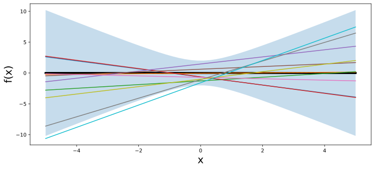

Understanding GPs is important for reasoning about model construction and generalization, and for achieving state-of-the-art performance in a variety of applications, including active learning, and hyperparameter tuning in deep learning.
GPs are everywhere, and it is in our interests to know what they are and how we can use them.
this section: Gaussian process priors over functions.
GP is defined as a collection of random variables, any finite number of which have a joint Gaussian distribution.
If a function \(f(x)\) is a Gaussian process, with mean function \(m(x)\) and covariance function or kernel \(k(x,x')\), \(f(x) \sim \mathcal{GP}(m, k)\),
–> any collection of function values queried at any collection of input points \(x\) (times, spatial locations, image pixels, etc.), has a joint multivariate Gaussian distribution with mean vector \(\mu\) and covariance matrix \(K\): \(f(x_1),\dots,f(x_n) \sim \mathcal{N}(\mu, K)\), where \(\mu_i = E[f(x_i)] = m(x_i)\) and \(K_{ij} = \mathrm{Cov}(f(x_i),f(x_j)) = k(x_i,x_j)\).
\[f(x) = w^{\top} \phi(x) = \langle w, \phi(x) \rangle,\](1)
with \(w\) drawn from a Gaussian (normal) distribution, and \(\phi\) being any vector of basis functions, for example \(\phi(x) = (1, x, x^2, ..., x^d)^{\top}\), is a Gaussian process.
(1).consider a few concrete examples
Suppose \(f(x) = w_0 + w_1 x\), and \(w_0, w_1 \sim \mathcal{N}(0,1)\), with \(w_0, w_1, x\) all in one dimension.
can equivalently write this function as the inner product \(f(x) = (w_0, w_1)(1, x)^{\top}\). In (1) above, \(w = (w_0, w_1)^{\top}\) and \(\phi(x) = (1,x)^{\top}\).
For any \(x\), \(f(x)\) is a sum of two Gaussian random variables.
Gaussians are closed under addition –> \(f(x)\) is also a Gaussian random variable for any \(x\).
In fact, we can compute for any particular \(x\) that \(f(x)\) is \(\mathcal{N}(0,1+x^2)\).
Similarly, the joint distribution for any collection of function values, \((f(x_1),\dots,f(x_n))\), for any collection of inputs \(x_1,\dots,x_n\), is a multivariate Gaussian distribution. Therefore \(f(x)\) is a Gaussian process.
def lin_func(x, n_sample):
preds = np.zeros((n_sample, x.shape[0]))
for ii in range(n_sample):
w = np.random.normal(0, 1, 2)
y = w[0] + w[1] * x
preds[ii, :] = y
return preds
x_points = np.linspace(-5, 5, 50)
outs = lin_func(x_points, 10)
lw_bd = -2 * np.sqrt((1 + x_points ** 2))
up_bd = 2 * np.sqrt((1 + x_points ** 2))
d2l.set_figsize((12,5))
d2l.plt.fill_between(x_points, lw_bd, up_bd, alpha=0.25)
d2l.plt.plot(x_points, np.zeros(len(x_points)), linewidth=4, color='black')
d2l.plt.plot(x_points, outs.T)
d2l.plt.xlabel("x", fontsize=20)
d2l.plt.ylabel("f(x)", fontsize=20)
d2l.plt.show()
we saw how a distribution over parameters in a modelinduces a distribution over functions.
often have ideas about the functions we want to model — whether they’re smooth, periodic, quickly varying, etc. — relatively tedious to reason about the parameters, which are largely uninterpretable.
GPs provide an easy mechanism to reason directly about functions.
Gaussian distribution is entirely defined by its first two moments, its mean and covariance matrix, a Gaussian process by extension is defined by its mean function and covariance function.
In the above example, the mean function
\[m(x) = E[f(x)] = E[w_0 + w_1x] = E[w_0] + E[w_1]x = 0+0 = 0.\]
Similarly, the covariance function is
\[k(x,x') = \mathrm{Cov}(f(x),f(x')) = E[f(x)f(x')]-E[f(x)]E[f(x')] = \\ E[w_0^2 + w_0w_1x' + w_1w_0x + w_1^2xx'] = 1 + xx'.\]
distribution over functions can now be directly specified and sampled from, without needing to sample from the distribution over parameters.
For example, to draw from \(f(x)\), we can simply form our multivariate Gaussian distribution associated with any collection of \(x\) we want to query, and sample from it directly.
very advantageous
same derivation for the simple straight line model above can be applied to find the mean and covariance function for any model of the form \(f(x) = w^{\top} \phi(x)\), with \(w \sim \mathcal{N}(u,S)\).
In this case, the mean function \(m(x) = u^{\top}\phi(x)\), and the covariance function \(k(x,x') = \phi(x)^{\top}S\phi(x')\). Since \(\phi(x)\) can represent a vector of any non-linear basis functions, we are considering a very general model class, including models with an even an infinite number of parameters.
Let’s derive this kernel starting from weight space. Consider the function
\[f(x) = \sum_{i=1}^J w_i \phi_i(x), w_i \sim \mathcal{N}\left(0,\frac{\sigma^2}{J}\right), \phi_i(x) = \exp\left(-\frac{(x-c_i)^2}{2\ell^2 }\right).\]
\(f(x)\) is a sum of radial basis functions, with width \(\ell\), centred at the points \(c_i\), as shown in the following figure.
\[k(x,x') = \frac{\sigma^2}{J} \sum_{i=1}^{J} \phi_i(x)\phi_i(x').\]
\[k(x,x') = \lim_{J \to \infty} \frac{\sigma^2}{J} \sum_{i=1}^{J} \phi_i(x)\phi_i(x') = \int_{c_0}^{c_\infty} \phi_c(x)\phi_c(x') dc.\]
By setting \(c_0 = -\infty\) and \(c_\infty = \infty\), we spread the infinitely many basis functions across the whole real line, each a distance \(\Delta c \to 0\) apart:
\[k(x,x') = \int_{-\infty}^{\infty} \exp(-\frac{(x-c)^2}{2\ell^2}) \exp(-\frac{(x'-c)^2}{2\ell^2 }) dc = \sqrt{\pi}\ell \sigma^2 \exp(-\frac{(x-x')^2}{2(\sqrt{2} \ell)^2}) \propto k_{\text{RBF}}(x,x').\]
By moving into the function space representation, we have derived how to represent a model with an infinite number of parameters, using a finite amount of computation.
GP with an RBF kernel is a universal approximator, capable of representing any continuous function to arbitrary precision.
We can intuitively see why from the above derivation.
We can collapse each radial basis function to a point mass taking \(\ell \to 0\), and give each point mass any height we wish.
GP with an RBF kernel is a model with an infinite number of parameters and much more flexibility than any finite neural network
all the fuss about overparametrized neural networks is misplaced?
GPs with RBF kernels do not overfit, and in fact provide especially compelling generalization performance on small datasets.
examples in Zhang 2021, such as the ability to fit images with random labels perfectly, but still generalize well on structured problems, (can be perfectly reproduced using Gaussian processes) Wilson 2020.
Neural networks are not as distinct as we make them out to be.
build further intuition about GPs with RBF kernels, and hyperparameters such as length-scale, by sampling directly from the distribution over functions.
simple procedure:
We illustrate this process in the figure below.
def rbfkernel(x1, x2, ls=4.): #@save
dist = distance_matrix(np.expand_dims(x1, 1), np.expand_dims(x2, 1))
return np.exp(-(1. / ls / 2) * (dist ** 2))
x_points = np.linspace(0, 5, 50)
meanvec = np.zeros(len(x_points))
covmat = rbfkernel(x_points,x_points, 1)
prior_samples= np.random.multivariate_normal(meanvec, covmat, size=5);
d2l.plt.plot(x_points, prior_samples.T, alpha=0.5)
d2l.plt.show()Consider a neural network function \(f(x)\) with one hidden layer:
\[f(x) = b + \sum_{i=1}^{J} v_i h(x; u_i).\]
\(b\) is a bias, \(v_i\) are the hidden to output weights, \(h\) is any bounded hidden unit transfer function, \(u_i\) are the input to hidden weights, and \(J\) is the number of hidden units.
Let \(b\) and \(v_i\) be independent with zero mean and variances \(\sigma_b^2\) and \(\sigma_v^2/J\), respectively, and let the \(u_i\) have independent identical distributions.
use the central limit theorem to show that any collection of function values \(f(x_1),\dots,f(x_n)\) has a joint multivariate Gaussian distribution.
The mean and covariance function of the corresponding Gaussian process are:
\[m(x) = E[f(x)] = 0\]
\[k(x,x') = \text{cov}[f(x),f(x')] = E[f(x)f(x')] = \sigma_b^2 + \frac{1}{J} \sum_{i=1}^{J} \sigma_v^2 E[h_i(x; u_i)h_i(x'; u_i)]\]
In some cases, we can essentially evaluate this covariance function in closed form. Let \(h(x; u) = \text{erf}(u_0 + \sum_{j=1}^{P} u_j x_j)\), where \(\text{erf}(z) = \frac{2}{\sqrt{\pi}} \int_{0}^{z} e^{-t^2} dt\), and \(u \sim \mathcal{N}(0,\Sigma)\). Then \(k(x,x') = \frac{2}{\pi} \text{sin}(\frac{2 \tilde{x}^{\top} \Sigma \tilde{x}'}{\sqrt{(1 + 2 \tilde{x}^{\top} \Sigma \tilde{x})(1 + 2 \tilde{x}'^{\top} \Sigma \tilde{x}')}})\).
first step in performing Bayesian inference involves specifying a prior
GPs can be used to specify a whole prior over functions.
Starting from a traditional “weight space” view of modelling, induce a prior over functions by starting with the functional form of a model, and introducing a distribution over its parameters.
alternatively specify a prior distribution directly in function space, with properties controlled by a kernel.
function-space approach has many advantages. We can build models that actually correspond to an infinite number of parameters, but use a finite amount of computation!
models have a great amount of flexibility, but also make strong assumptions about what types of functions are a priori likely, leading to relatively good generalization on small datasets.
assumptions of models in function space controlled by kernels: encode higher level properties of functions, such as smoothness and periodicity
Many kernels are stationary: they are translation invariant.
Functions drawn from GP with a stationary kernel have roughly the same high-level properties regardless of where we look in the input space.
GPs a relatively general model class including polynomials, Fourier series, and so on, as long as we have a Gaussian prior over the parameters.
also include neural networks with an infinite number of parameters, even without Gaussian distributions over the parameters.